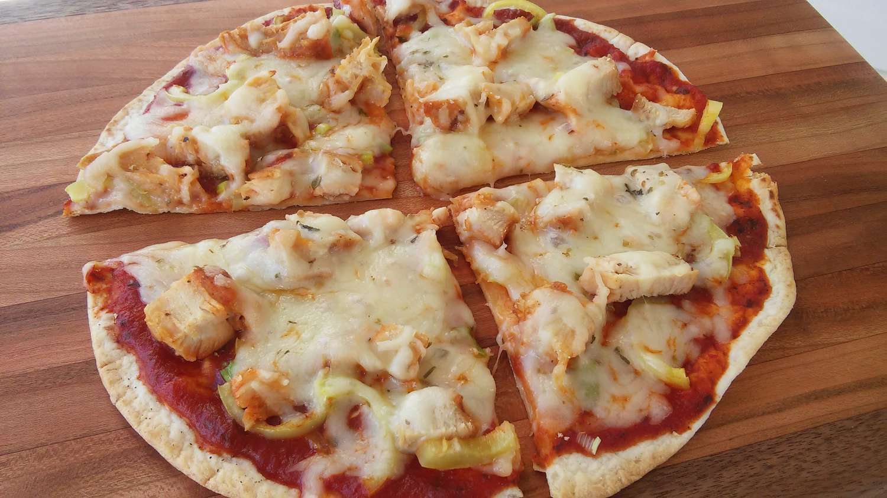

Tortilla Pizza

Description
Tortilla pizza is a quick and flavorful alternative to traditional pizza. Made with an 8-inch soft flour tortilla, savory toppings, and gooey mozzarella cheese, it's a delicious and versatile meal that's ready in no time.
Ingredients
- 1 (8 inch) soft flour tortilla
- 1 teaspoon olive oil
- 1 pinch garlic powder
- salt and ground black pepper to taste
- 3 tablespoons tomato sauce
- 1 cooked chicken breast, sliced
- 1/2 green bell pepper, chopped
- 2 green onions, finely chopped
- 1/3 cup shredded mozzarella cheese
- 1 pinch dried oregano